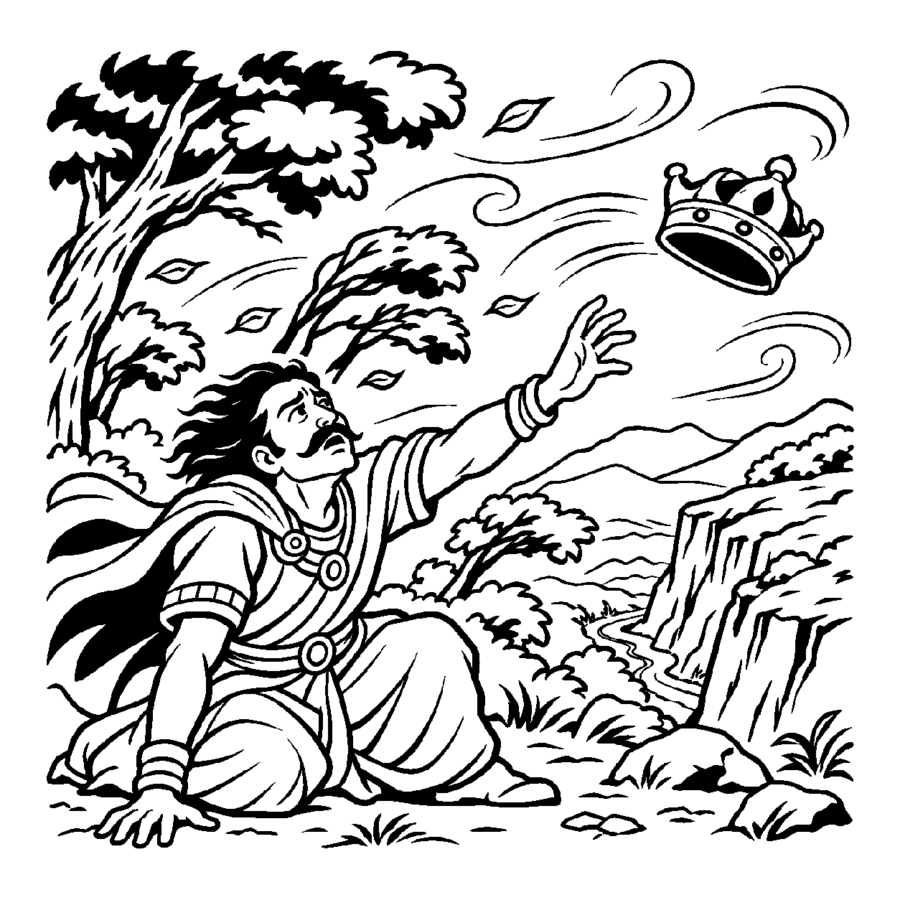

નગરમાં નોકરી કરવા આવેલો એક મુસાફર એક સુંદર મકાન ભાડે રાખે છે. તે ઘરના દરવાજા પર પોતાના નામની નેમપ્લેટ લગાવે છે અને પાડોશીઓને કહે છે: "આ મારું પોતાનું ઘર છે!" જ્યાં સુધી તે દર મહિને ભાડું આપે છે ત્યાં સુધી તે ઘરમાં રહે છે, પરંતુ જ્યારે મુદત પૂરી થાય છે ત્યારે મકાનમાલિક તેને ખાલી કરાવી દે છે. વાસ્તવમાં તે ઘર ઈંટો-ચૂનાનું પુદ્ગલ છે અને મુસાફર સ્વતંત્ર ચેતન જીવ છે. મુસાફર ઘરનો વાસ્તવિક માલિક નહોતો, કેવળ રહેવા પૂરતો વ્યવહારિક સ્વામી હતો. તેવી જ રીતે સંસારી જીવ જ્યારે આયુષ્ય કર્મના બળે મળેલા હાડ-માંસના સ્થૂળ શરીર તેમજ બાહ્ય ધન-વૈભવ પર — "આ શરીર મારું છે, આ ધન-દોલત મારી છે, આ હવેલીનો હું માલિક છું" — એમ પરદ્રવ્યો પર સ્વામિત્વનો આરોપ કરે છે, ત્યારે તેને 'પરસ્વામિત્વ અસદ્ભૂત વ્યવહાર' કહેવાય છે.
પરમાર્થ દ્રષ્ટિએ આત્મા કેવળ પોતાના જ્ઞાન, દર્શન, ચારિત્ર્ય અને સુખરૂપ નિજ ગુણોનો જ સાચો સ્વામી છે. શરીર કે બાહ્ય લક્ષ્મી પર ચેતનાનું કોઈ શાશ્વત સ્વામિત્વ નથી; એક ક્ષણમાં આયુષ્ય પૂરું થતાં જ દેહ અહીં પડી રહે છે અને ધન તિજોરીમાં જ રહી જાય છે. છતાં પણ લૌકિક વ્યવસ્થા, સામાજિક કાયદા, વેપાર અને પરિવારના સંચાલન માટે સ્વામિત્વનો વ્યવહાર અત્યંત અનિવાર્ય છે. આ વ્યવહાર નય વગર કોઈ પોતાની વસ્તુ સાચવી પણ શકતું નથી.
આ નય સાધકને જગાડે છે કે બાહ્ય પદાર્થોની માલિકી કેવળ મુસાફરના ભાડાના ઘર જેવી છે; સાચો સ્વામી તો એ છે જે પોતાના મન અને ઇન્દ્રિયો પર વિજય મેળવે છે.
શરીર ધન ને વૈભવ પર, સ્વામિત્વનો વિસ્તાર;
'માલિક હું છું' માનતો, ચાલે જગ વ્યવહાર.
અંત સમયે સંગ ના આવે, માટીનો આ દેહ;
પરસ્વામિત્વ તજી લહે, નિજ ગુણ સંગે સ્નેહ.
સાધકને જગાડે છે કે બાહ્ય પદાર્થોની માલિકી કેવળ મુસાફરના ભાડાના ઘર જેવી છે; સાચો સ્વામી તો એ છે જે પોતાના મન અને ઇન્દ્રિયો પર વિજય મેળવે છે.

એક નગરમાં રાજા વિક્રમસેને પોતાના રાજ્યની સીમાઓ વધારીને હજારો એકર જમીન, પર્વતો અને નદીઓ પોતાના તાબામાં લીધાં. તે રાજસભામાં છાતી કાઢીને કહેતો: "આ પર્વતો, આ જંગલો અને આ નદીઓ મારી છે! હું આ તમામ પ્રકૃતિનો સ્વામી છું!" એક સંધ્યાકાળે તે જંગલમાંથી પસાર થતો હતો ત્યારે ભારે વાવાઝોડું આવ્યું. પવનના સૂસવાટાથી મોટાં મોટાં વૃક્ષો ધરાશાયી થવા લાગ્યાં. રાજાનો ઘોડો ડરીને ભાગી ગયો અને રાજા જમીન પર પટકાયો. રાજાએ પવન સામે તલવાર ઉગામી અને બરાડ્યો: "પવન! રોકાઈ જા! તું મારા રાજ્યમાં ફૂંકાય છે, હું આ વનનો માલિક છું!" પરંતુ પવને એક જ ઝાપટે રાજાનો સુવર્ણ મુગટ ઊડાવીને ઊંડી ખીણમાં ફેંકી દીધો. રાજા લાચાર બનીને કાંપવા લાગ્યો: "શું મારું આ પ્રકૃતિ પર કોઈ સ્વામિત્વ નથી?"
તે સમયે નજીકની ગુફામાંથી એક શાંત ધ્યાની સંત બહાર આવ્યા. તેમણે રાજાને હાથ પકડીને ગુફામાં આશ્રય આપ્યો અને કહ્યું: "રાજન! પરસ્વામિત્વ અસદ્ભૂત વ્યવહારને ઓળખો! આ પર્વતો, જંગલો અને નદીઓ અનાદિકાળથી અહીં છે અને અનંતકાળ સુધી રહેશે. તમે પહેલાં પણ સેંકડો રાજાઓ આવ્યા અને પોતાને માલિક કહીને કાળના મુખમાં સમાઈ ગયા! બહારના કોઈ પણ પુદ્ગલ પર ચેતનાનું વાસ્તવિક સ્વામિત્વ નથી; એ તો કેવળ વ્યવહારિક અધિકાર છે. સાચો સ્વામી એ છે જે પોતાના ક્રોધ, લોભ અને અહંકાર પર વિજય મેળવીને પોતાના આત્માનો સ્વામી બને છે!" રાજાની આંખો ઊઘડી ગઈ. પ્રકૃતિ પર આધિપત્ય જતાવવાનો મિથ્યા ગર્વ ઓગળી ગયો. તેણે અંતરંગ સામ્રાજ્યની શોધ આદરી અને તેનું ચિત્ત મહામૌનના પરમ વિશ્રામમાં શાંત થઈ ગયું.
જો જીવ બાહ્ય ધન કે શરીરને જ પોતાનું વાસ્તવિક અને કાયમી સ્વામિત્વ માની લે, તો તે પદાર્થોના વિયોગ વખતે અસહ્ય શોક અને પાગલપણામાં ડૂબી જાય છે.
આ નય વ્યવહારિક વહીવટ માટે સ્વામિત્વ સ્વીકારીને પણ અંતરમાં અનાસક્ત રહેવાની પ્રેરણા આપે છે, જેથી સાધક હું-પણાને ખોઈને પોતાના આત્મસ્વરૂપમાં સ્થિર થાય છે.